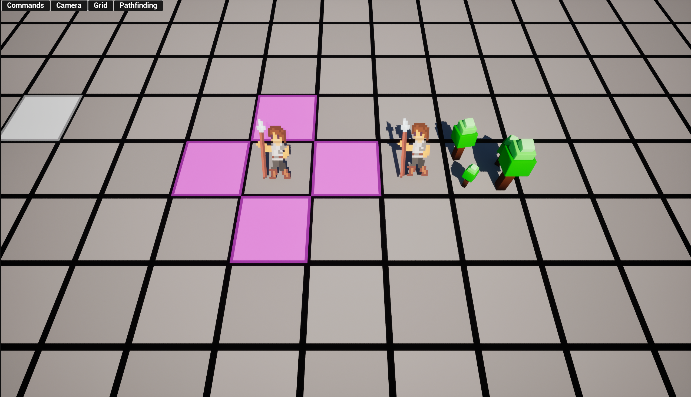
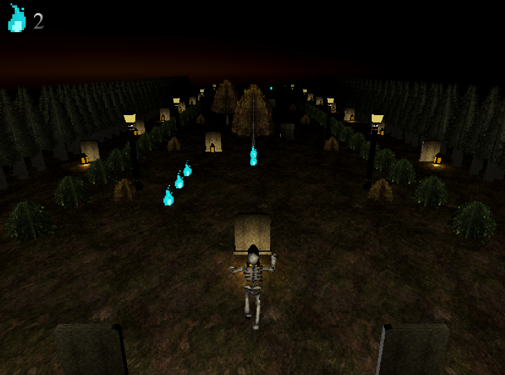
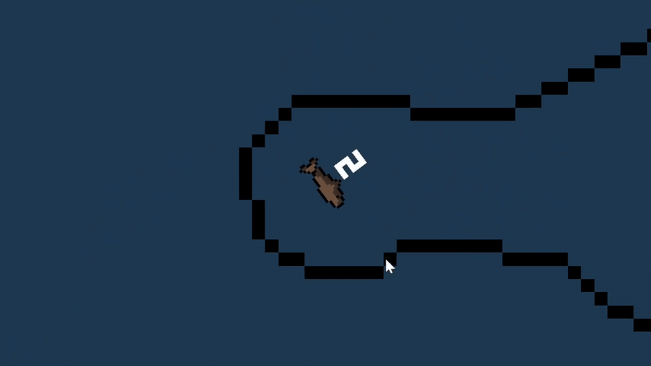

Works In Progress
Projets En Cours
Tactical RPG Project
Projet de RPG Tactique

Tools Used:
Outils Utilisés:
- Unreal
- Blueprint Scripting
- Aseprite
This is a grid-based Tactical RPG with HD2D Graphics, inspired by Fire Emblem. While this will take quite a long time, I've already learned a lot from working on this regarding camera movement, grid/tile systems and pathfinding. This is by far my most complicated project yet, but I'm looking forward to how everything will come together in the final product!
Ce projet est un RPG tactique basé sur une grille avec des graphismes HD2D, inspiré par Fire Emblem. Même si cela prendra beaucoup de temps, j'ai déjà beaucoup appris en travaillant sur ce projet en ce qui concerne les mouvements de caméra, les systèmes de grille et la recherche de chemin. C'est de loin mon projet le plus compliqué à ce jour, mais j'ai hâte de voir le résultat final!
Endless Runner Project
Projet Jeu De Course Infinie

Tools Used:
Outils Utilisés:
- Unity
- C#
I am currently working on an endless runner for PC and mobile, and I'm already learning quite a lot regarding procedural level generation, object pooling and mobile input systems.
Je travaille actuellement sur un jeu de course infinie pour PC et mobile, et j'apprends déjà beaucoup sur la génération procédurale de niveaux, le pooling d'objets et les systèmes d'entrée mobiles.
Always a Smaller Fish

Tools Used:
Outils Utilisés:
- Godot
- GDScript
- Aseprite
My solo project, a 2D growth-based Metroidvania game where size matters. Whether you decide to eat smaller fish to become big and strong, or stay small to fit into tight crevices and find secrets, there is more than one way to traverse this ocean. You can follow my progress here!
Mon projet solo, un jeu Metroidvania en 2D où la taille compte. Que vous décidiez de manger des poissons plus petits pour devenir grand et fort, ou de rester petit pour vous faufiler dans des crevasses étroites et trouver des secrets, il y a plus d'une façon de traverser cet océan. Vous pouvez suivre mes progrès ici!